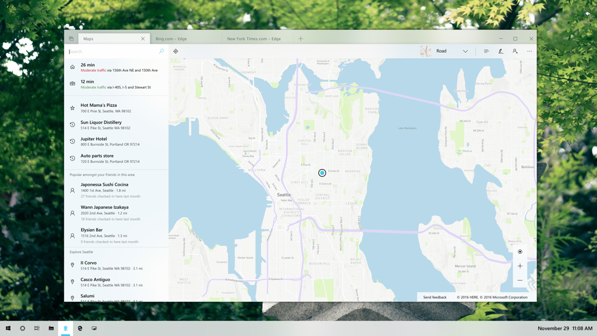
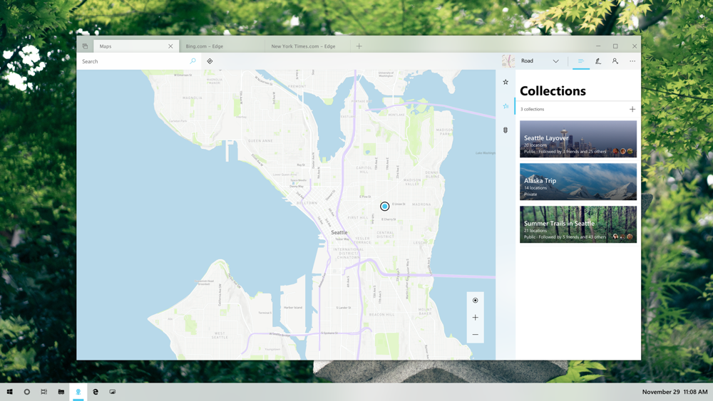

Windows Maps App
- Role: Senior Product Designer
- Responsibilities: Concept explorations, information architecture, interaction exploration, visual design explorations
Outcomes:
- Collections concept was adopted and implemented in Microsoft Edge browser.
- Two pieces of feedback to the Fluent Design System was implemented.
- Feedback to the Windows Sets concept contributed the decision on that feature.
As the Senior UX Designer on the team, I played a pivotal role in addressing users' pain points and evolving the Fluent design language for the Windows Maps app. I led the Fluent UX explorations, aiming to identify new features, explore integration with the new tab groups in Windows Shell, and revamp the look and feel of the app according to the new Fluent design language.
The Fluent Design Language, a new design system adopted by various product teams in Microsoft, was spearheaded by the visual system team. However, it needed further testing and adoption by the Windows Shell and apps teams. The Windows Maps app became one of the first-party apps to collaborate closely with the Fluent visual design system team to stress test, refine, and co-define the new design language.
We focused on 3 top user pain-points based on the Jobs To Be Done for maps users.
The first user pain-point is comparing different places to make informed decisions. The Windows Maps app lacked an easy way to perform this task. To overcome this, I introduced the concept of pop-up place cards, enabling users to compare places by viewing their information outside the app window. This streamlined the comparison scenario and made it much more user-friendly.

The second pain-point is searching for multiple places to plan an evening. While the Windows Maps app supported searching for specific types of places from a place card, the predefined nearby searches lacked specificity. To enhance this experience, I explored the concept of multi-tab searches, leveraging the tab group concept being explored by the Windows Shell team. With this approach, search results from one Map app tab would appear in another tab within the same window, offering a more flexible and efficient search experience.

The third pain-point is group trip planning. I introduced a powerful solution by connecting the Endeavor app with the Windows Maps app: Collections. This feature allows users to seamlessly plan and organize their trips by creating curated lists of places. With Collections, users can effortlessly save their favorite spots, edit and customize their lists, and conveniently share them with others.
The integration between the Endeavor app and the Windows Maps app ensures that collections created in either platform are synchronized, providing a unified and cohesive experience. Users can easily switch between the apps, seamlessly accessing and managing their curated lists. Whether it's researching and saving new places in Endeavor or navigating and exploring them in the Windows Maps app, the connection between the two applications streamlines the trip planning process.
Through these efforts, I made significant impacts on addressing users' pain points and evolving the Fluent design language for the Windows Maps app, resulting in an enhanced user experience and a more cohesive and visually appealing interface.